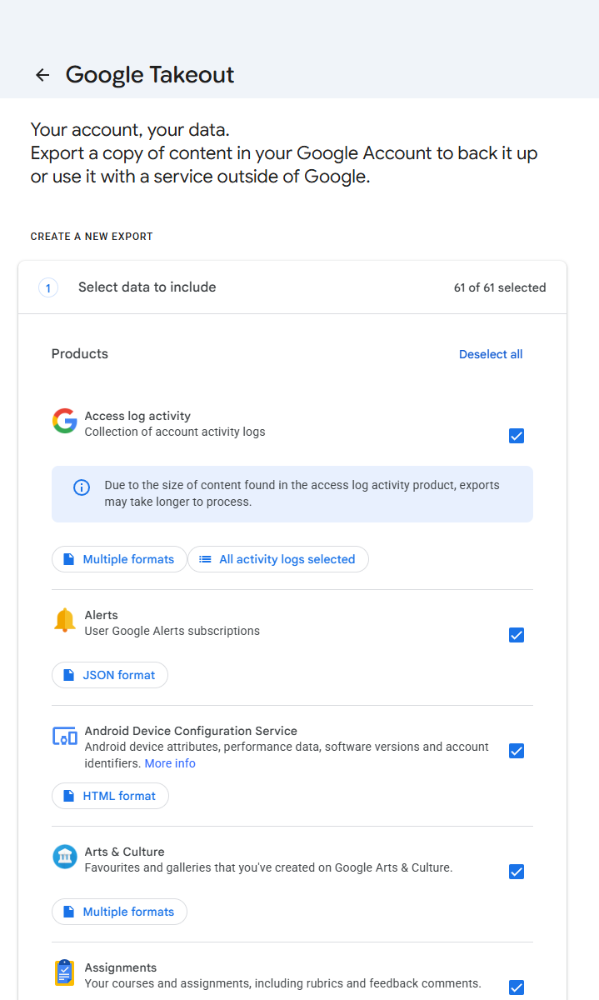
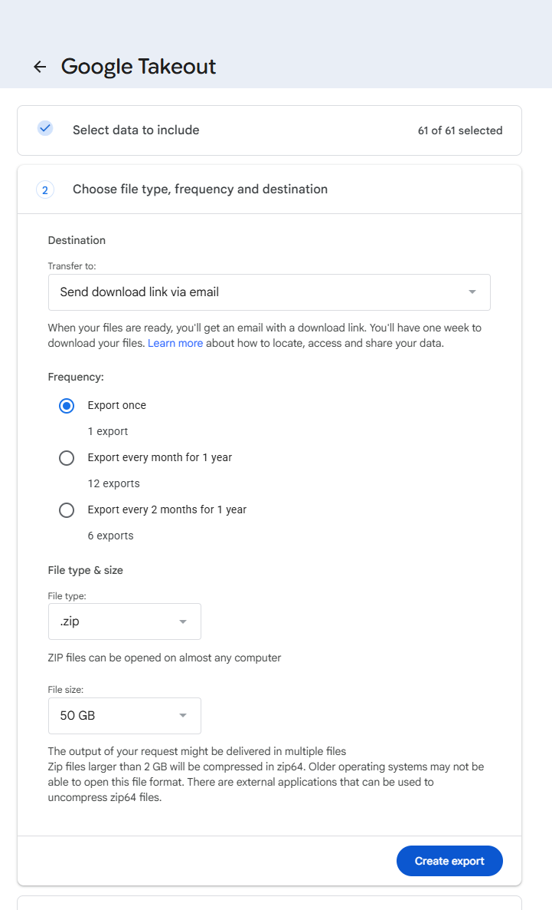
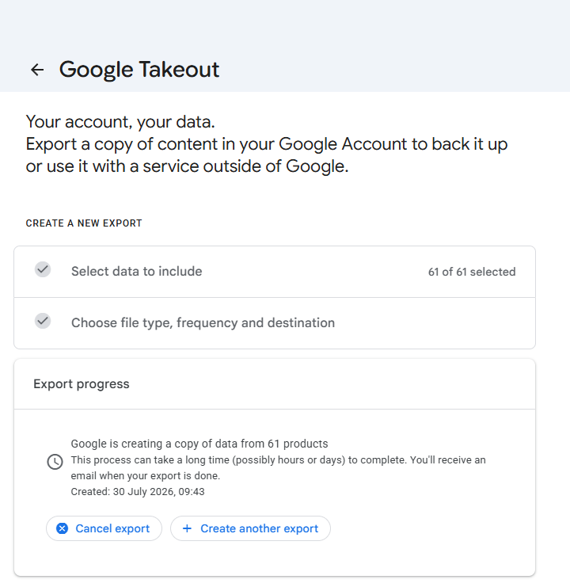

How to export your data from Google
Requesting the GDPR export, what arrives, and how to open it.
Google is required to give you a copy of the data it holds about you, including photos, videos, location history, email, browsing activity and purchase history. The request itself is free, and arrives as .zip (recommended) or .tgz, split into chunks of up to 50 GB. Typical wait: minutes to a few days depending on size.
Step by step
Every screenshot below is from Google's own pages on 30 July 2026.
-
Open Google Takeout
Sign in with the Google account you want to export.

Takeout opens with everything selected - 61 products. Deselect all first unless you genuinely want all of it. -
Deselect all, then pick what you need
Takeout ticks everything by default. Click "Deselect all" and choose only what you want (e.g. Google Photos, Mail, YouTube).
-
Choose .zip and a large chunk size
Pick .zip - it is the format everything can open, and the one Muletto reads. For size, choose the largest chunk offered: fewer, bigger files mean fewer downloads to babysit and fewer chances for one to fail. A 50 GB library at the 2 GB default arrives as around 25 separate zips. Files over 2 GB come back in the zip64 format, which Muletto reads and some desktop tools do not.

Destination, frequency, file type and size are all on one screen. Google's own note here is worth reading: anything over 2 GB comes back as zip64, which some tools cannot open. Muletto can. -
Choose a one-time export
"Export once" is right for most people. Then "Create export".
-
Wait for the email
Small exports finish in minutes; large photo libraries can take a day or more. Google emails a download link.

Confirmed on the screen itself: hours or days. Asking for all 61 products is what makes it days. -
Download all parts
Download every numbered part, and keep them together in one folder. Google gives you seven days and allows each archive to be downloaded five times, and both limits catch people. Seven days is short for a library that arrives in a dozen parts, and the five-download cap is per archive - retry a failed part a few times and you can exhaust it. If either lapses you request the whole export again and wait again. Do not unzip them: Muletto reads the archives directly, which is faster and avoids doubling the disk space you need.
-
Open all the parts at once
Drop every zip into Muletto together. It reads them as one export, so a photograph in part 3 finds its metadata in part 7, the duplicates Google created by exporting album copies alongside year folders are found and folded together, and the dates and locations go back into the files themselves.
Opening your Google export
Muletto reads a Google export directly - the zip, without unpacking it first - and finds the photos, videos and location history inside.
It runs in the browser: the archive is never uploaded, there is no account, and nothing is installed. Open several exports at once and they become one library, with the photographs that appear in more than one of them found automatically.
Worth knowing
Common questions
Why are all my Google Photos dated today after a Takeout?
Takeout does not put the capture date inside the photograph. It writes it into a small JSON file beside each one, so anything reading only the picture sees the day you downloaded it. Muletto reads those sidecar files and can write the real date and place back into each image.
Why is my Google Takeout Location History empty?
Google moved Timeline onto the phone during 2024 and 2025 and shut the server-side one down in June 2025, so a Takeout has nothing left to include. In a recent export the Timeline folder holds a settings file of about a kilobyte and no history at all. The data is still on your phone. Open the Google Maps app, tap your profile picture, then Settings, then Personal Content, and look for Export Timeline data - that route works on both Android and iPhone, and on iPhone the file saves through the share sheet as location-history.json. Some Android versions put the same thing under Settings, then Location, then Location services, then Timeline. What comes off the phone is a different format from the old Records.json rather than a newer version of it. There is a separate guide on this page called Why is my Google location history empty, which goes through it in full.
What are the supplemental-metadata.json files in my Takeout?
They hold each photograph's date, place and description. Google renamed them around October 2024 and truncates the name when the whole filename runs long, so one export can contain supplemental-metadata.json, supplemental-me.json and suppl.json for different pictures. Matching only the full spelling loses the rest.
How do I open a Google Takeout without uploading it anywhere?
Use something that reads the archive locally. Muletto does: drop the zip in and it is read on your own machine. You can turn your connection off first and it still works.
Why is my Google Takeout split into several zip files?
You choose a maximum archive size when requesting, and anything larger is split. A photograph and its sidecar file can end up in different parts, so open all of them together rather than one at a time.